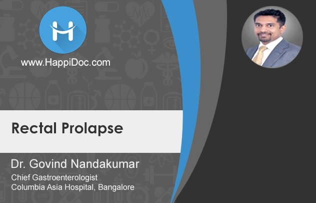
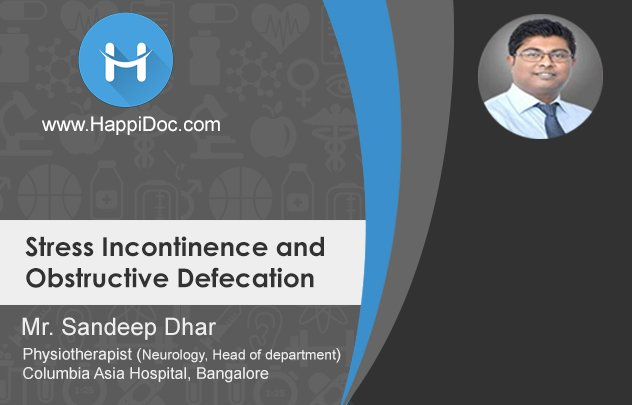
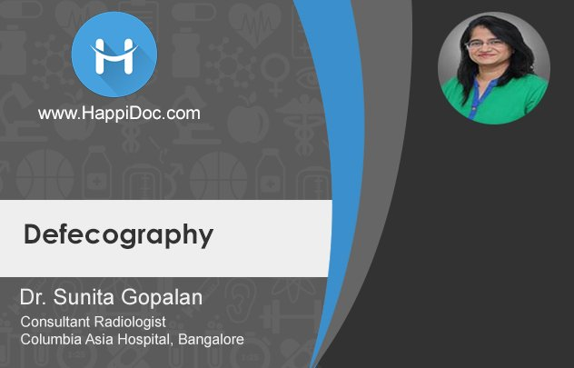

Watch and learn from Facebook marketing experts
Some of the most powerful tools to grow your business can be found on Facebook, Instagram and Audience Network. Join our webinars to stay up to date on how to get more out of these platforms. We'll cover topics like crafting video for mobile, using Instagram in your marketing strategy, improving your performance marketing, and more.
Colon Cancer : Discussion between Dr. Nilesh & Dr. Roopa

Video duration : 3:00 minutes
Saturday 25th Nov 2017
In this video, Dr. Nilesh and Dr. Roopa, Consulting Radiologists, Columbia Asia Hospital, Bangalore discuss in detail about Colon cancer. They discuss its diagnosis, risk factors and role of medical oncologist in management of colon cancer.
Rectal Cancer : An Overview by Dr Govind Nandakumar

Video duration : 3:00 minutes
Sunday 26th Nov 2017
Dr. Govind Nandakumar Head GI Surgery at Columbia Asia Hospital, Bangalore explains the diagnosis and treatment of rectal cancer. He also talks about the importance of multi-disciplinary team of radiologist, oncologist, gastroenterologist, interventional radiologist treatment for the care of a patient with rectal cancer.
Role of Imaging in Rectal Cancer by Dr. Anita Nagadi

Video duration : 3:00 minutes
Saturday 2nd Dec 2017
Colorectal cancer is among the top 5 cancers worldwide. The objective of rectal imaging in rectal cancer is to help doctors distinguish patients who could benefit from preoperative chemo radiation compared to those who benefit from surgery alone. Dr. Anita Nagadi talks about rectal imaging technique, MRI sequence, and role of MRI in prognosis & post-surgery.
Management of Colon and Rectal Cancer by Dr Baswantrao
Video duration : 3:00 minutes
Sunday 3rd Dec 2017
This video talks about the various management options for hematological malignancies and solid malignancies. Dr. Baswantrao Malipatil, Consultant – Medical Oncology, Columbia Asia Hospital explains how radiation, surgery and chemotherapy are important in the case of colorectal cancers and how tumor board meetings decide on the best treatment option for a colorectal patient.
Stoma in Ostomy Care by Dr Govind Nandakumar
Video duration : 3:00 minutes
Sunday 3rd Dec 2017
Dr. Govind Nandakumar Head GI Surgery at Columbia Asia Hospital, Bangalore explains the types of ostomy, the various reasons for an ostomy, and the importance of an ostomy therapist to improve the quality of life for a person with stoma.
Ulcerative Colitis & Crohn's Disease by Dr Govind Nandakumar

Video duration : 3:00 minutes
Sunday 3rd Dec 2017
An overview of Crohn’s disease, the indications for surgery, diagnostic procedures, the resection options, strictureplasty, risk factors for recurrence, genetic predispositions are elaborated in this video along with the treatment for ulcerative colitis. This short video is presented by Dr. Govind Nandakumar Head GI Surgery at Columbia Asia Hospital, Bangalore.
Rectal Prolapse : An Overview by Dr Govind Nandakumar
Video duration : 3:00 minutes
Sunday 3rd Dec 2017
The general causes and types of rectal prolapse along with the treatment modality in a patient with rectal prolapse is discussed in this video by Dr. Govind Nandakumar. He explains about laparoscopic procedure called rectopexy in young patients and Altmeyer procedure in older patients for treatment of rectal prolapse.
Chronic Constipation : An Overview by Dr. Govind Nandakumar
Video duration : 3:00 minutes
Sunday 3rd Dec 2017
The importance of history and medical examination and the need for a clear distinction between transit issue and defecation issue in chronic constipation is elaborated in this video by Dr. Govind Nandakumar Head GI Surgery at Columbia Asia Hospital, Bangalore.
Stress Incontinence & Obstructive Defecation by Dr. Sandeep Dhar
Video duration : 3:00 minutes
Sunday 3rd Dec 2017
Gastroenterological patients generally suffer from stress incontinence and obstructive defecation. Sandeep Dhar, Head of Physiotherapy and Rehabilitation, Columbia Asia Hospital, Bangalore explains about biofeedback therapy which improves the muscle tone by either contracting or relaxing the pelvic floor muscles. Biofeedback therapy strengthens the pelvic floor muscles to overcome stress incontinence and obstructive defecation.
Defecography by Dr. Sunitha Gopalan
Video duration : 3:00 minutes
Sunday 3rd Dec 2017
One of the less utilized radiological procedures called Defecography; the procedure followed is explained in this video by Dr. Sunita Gopalan, Consultant Radiologist at Columbia Asia Hospital, Bangalore. The purpose and indications for defecogrpahy is also elaborated in detail along with the two types of defecogrpahy.